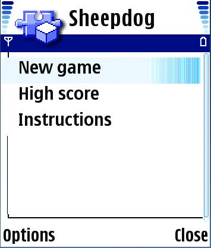
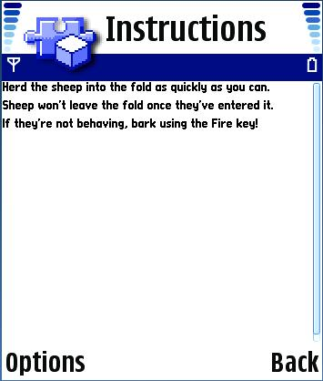
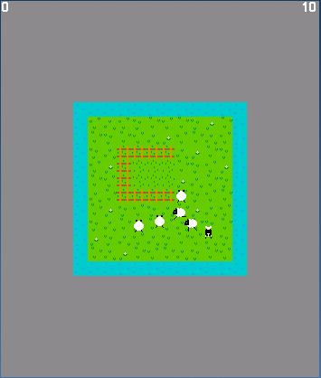
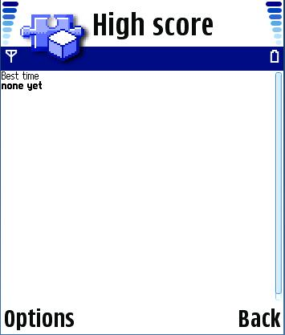
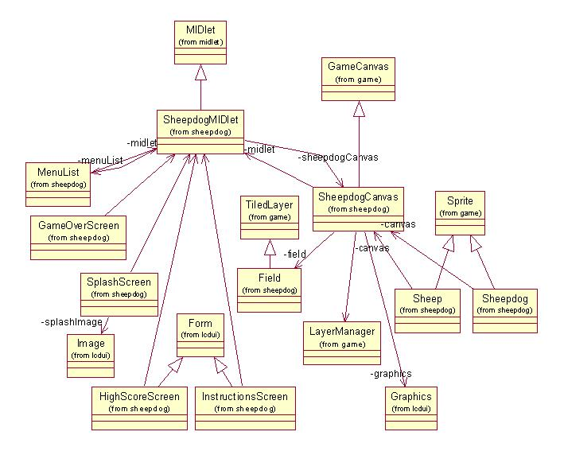

This example implements a simple game prototype that uses the MIDP 2.0 Game Canvas.
The example makes use of the standard MIDP application framework and LCDUI API. The reader should be familiar with these areas before attempting to understand this example.
The example is built using the standard method for building and running as described in Building and running the examples.
The following classes should be included in the jar:
com.nokia.midp.examples.sheepdog.*
A number of resource files are used and are in the res folder within the src tree of this example.
When the user starts the MIDlet a splash screen appears briefly then the following menu screen appears.

If the user selects instructions the following brief instruction screen appears.
If the user selects new game then the following screen appears. Note that in this example the entire screen display is not utilized.

The user may move the dog to herd the sheep and if the user selects the OK button the dog "barks."
If the user selects the high score option then the following screen is shown.

A UML class diagram for the Sheepdog MIDlet is shown below.

This example illustrates the implementation of a simple game prototype that uses the MIDP 2.0 Game Canvas.